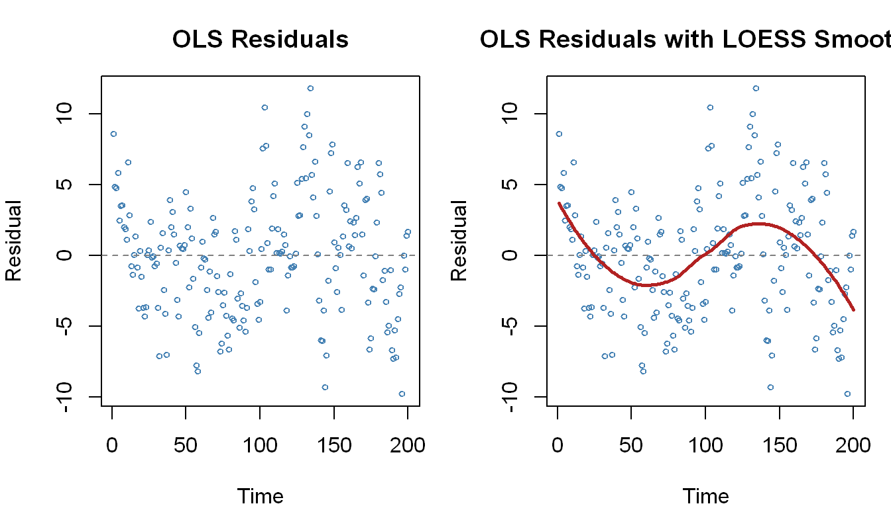
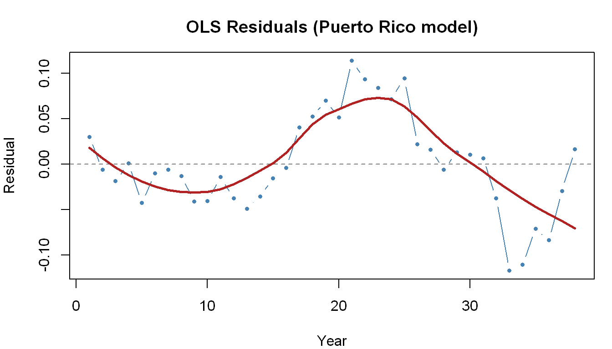

# Clear workspace
rm(list = ls())
# Plotting options
options(
repr.plot.width = 8,
repr.plot.height = 5,
repr.plot.res = 150,
warn = -1
)
# Required packages
packages <- c(
"lmtest", # dwtest(), bgtest(), coeftest()
"sandwich", # vcovHAC() for Newey-West SE
"prais", # prais_winsten()
"AER", # Real data: USMacroG
"knitr", # kable() for clean tables
"modelsummary" # msummary() for model comparison tables
)
invisible(lapply(packages, function(pkg) {
if (!require(pkg, character.only = TRUE, quietly = TRUE)) {
install.packages(pkg, quiet = TRUE)
require(pkg, character.only = TRUE, quietly = TRUE)
}
}))Time Series Analysis — Part 1
Serial Correlation: Detection and Remedies
NYU - Applied Statistics and Econometrics 2
What This Notebook Covers
This notebook accompanies the Part 1 time series lectures and focuses on a single, central practical question: what do you do when OLS residuals are serially correlated?
We work through the problem in two stages. First, we simulate data with a known AR(1) error structure — this lets us verify that every test and remedy behaves exactly as theory predicts. Second, we apply the same toolkit to real macroeconomic data, where the truth is unknown and judgment matters.
Along the way we cover:
- Visual inspection of residuals as a first diagnostic
- The Durbin-Watson test and its limitations
- The Breusch-Godfrey LM test as a general-purpose alternative
- Newey-West HAC standard errors
- FGLS via Cochrane-Orcutt and Prais-Winsten
- A comparison of all methods on the same dataset
1 The Problem: Serial Correlation in OLS Residuals
1.1 Why It Matters
In a time series regression
\[y_t = \beta_0 + \beta_1 x_{t,1} + \beta_2 x_{t,2} + \epsilon_t\]
the CLRM requires \(\text{Cov}(\epsilon_t, \epsilon_s) = 0\) for \(t \neq s\). When this fails — when errors are serially correlated — the consequences for OLS are asymmetric and worth being precise about:
| Property | Holds under serial correlation? |
|---|---|
| Unbiasedness | Yes |
| Consistency | Yes (if no lagged \(y\)) |
| Efficiency (BLUE) | No — OLS is no longer best |
| Standard errors correct | No — usually understated |
| \(t\), \(F\), \(\chi^2\) statistics valid | No — inference is unreliable |
The practical consequence: significance tests can be severely misleading. A coefficient that appears significant with \(p < 0.001\) might not be significant at all once serial correlation is accounted for.
1.2 The AR(1) Error Model
The most common model for serial correlation in errors is the first-order autoregressive process:
\[\epsilon_t = \rho \epsilon_{t-1} + \nu_t, \quad |\rho| < 1, \quad \nu_t \sim \text{i.i.d.}(0, \sigma^2)\]
where \(\nu_t\) is white noise and \(\rho\) is the serial correlation parameter. When \(\rho = 0\), errors are uncorrelated and OLS is fine. When \(|\rho|\) is large (close to 1), the problem is severe.
What does \(\rho\) look like? Unrolling the AR(1):
\[\epsilon_t = \rho \epsilon_{t-1} + \nu_t = \rho^2 \epsilon_{t-2} + \rho \nu_{t-1} + \nu_t = \cdots = \sum_{j=0}^{\infty} \rho^j \nu_{t-j}\]
This means \(\epsilon_t\) carries a weighted memory of all past shocks. When \(\rho\) is large, that memory is long.
2 Setup
2.1 Load Required Packages
3 Simulation — Seeing the Problem Clearly
Simulation is the best way to build intuition about serial correlation. We know the truth by construction, so we can verify exactly what each test finds and why.
3.1 The Data Generating Process
We simulate \(N = 200\) observations from:
\[y_t = \beta_0 + \beta_1 x_{t,1} + \beta_2 x_{t,2} + \epsilon_t\] \[\epsilon_t = \rho \epsilon_{t-1} + \nu_t, \quad \nu_t \sim N(0, 9)\]
with \(\beta = (10, 5, -3)'\) and \(\rho = 0.8\) — a high level of positive serial correlation.
set.seed(123)
N <- 200
# True parameters
beta_vec <- c(10, 5, -3)
rho_true <- 0.8
# Regressors
x1 <- seq(from = 0, to = 5, length.out = N)
x2 <- sample(seq(from = 3, to = 17, length.out = 80), size = N, replace = TRUE)
# Generate AR(1) errors: start from epsilon_0 = 0
nu <- rnorm(mean = 0, sd = 3, n = N) # white noise innovations
eps <- numeric(N)
eps[1] <- nu[1]
for (i in 2:N) {
eps[i] <- rho_true * eps[i - 1] + nu[i]
}
# Construct y
X_mat <- cbind(1, x1, x2)
y <- X_mat %*% beta_vec + eps
# Collect into a data frame with a time index
sim_data <- data.frame(y = y, x1 = x1, x2 = x2, time = 1:N)What does \(\rho = 0.8\) mean in practice? The autocovariance function of an AR(1) is:
\[\text{Cov}(\epsilon_t, \epsilon_{t-k}) = \rho^k \cdot \frac{\sigma^2}{1 - \rho^2}\]
So with \(\rho = 0.8\), errors 5 periods apart still have correlation \(0.8^5 \approx 0.33\). This is a very persistent error process.
3.2 OLS Estimation
# Estimate the model ignoring serial correlation
mdl_ols <- lm(y ~ x1 + x2, data = sim_data)
summary(mdl_ols)
Call:
lm(formula = y ~ x1 + x2, data = sim_data)
Residuals:
Min 1Q Median 3Q Max
-9.7965 -3.2193 0.0674 2.5057 11.8135
Coefficients:
Estimate Std. Error t value Pr(>|t|)
(Intercept) 10.61601 0.97983 10.84 <2e-16 ***
x1 4.89018 0.20457 23.91 <2e-16 ***
x2 -2.93686 0.07545 -38.92 <2e-16 ***
---
Signif. codes: 0 '***' 0.001 '**' 0.01 '*' 0.05 '.' 0.1 ' ' 1
Residual standard error: 4.182 on 197 degrees of freedom
Multiple R-squared: 0.9198, Adjusted R-squared: 0.919
F-statistic: 1129 on 2 and 197 DF, p-value: < 2.2e-16Notice that OLS recovers coefficients close to the true values \(\beta = (10, 5, -3)'\) — OLS is unbiased. But the standard errors and \(t\)-statistics are unreliable. We’ll quantify this shortly.
4 Detecting Serial Correlation
4.1 Visual Inspection
The first and fastest diagnostic is always a residuals plot. With serially correlated errors, residuals from OLS will show visible runs — long stretches above zero followed by long stretches below zero (for positive \(\rho\)), rather than the random scatter expected under independence.
# Extract residuals
r <- residuals(mdl_ols)
tt <- 1:length(r)
# Plot 1: Raw residuals
par(mfrow = c(1, 2), mar = c(4, 4, 3, 1))
plot(tt, r,
type = "p", pch = 1, cex = 0.6,
xlab = "Time", ylab = "Residual",
main = "OLS Residuals",
col = "steelblue"
)
abline(h = 0, lty = 2, col = "gray50")
# Plot 2: Residuals with LOESS smoother to highlight pattern
plot(tt, r,
type = "p", pch = 1, cex = 0.6,
xlab = "Time", ylab = "Residual",
main = "OLS Residuals with LOESS Smoother",
col = "steelblue"
)
abline(h = 0, lty = 2, col = "gray50")
lines(tt, predict(loess(r ~ tt)), col = "firebrick", lwd = 2.5)
The LOESS smoother makes the pattern unmistakable: residuals move in long, smooth waves rather than oscillating randomly around zero. This is the visual signature of positive serial correlation.
4.2 The Durbin-Watson Test
The Durbin-Watson (DW) test is the classical test for AR(1) serial correlation. It tests:
\[H_0: \rho = 0 \qquad \text{vs.} \qquad H_1: \rho > 0 \text{ (or } \rho \neq 0\text{)}\]
The test statistic is:
\[DW = \frac{\sum_{t=2}^T (\hat{\epsilon}_t - \hat{\epsilon}_{t-1})^2}{\sum_{t=2}^T \hat{\epsilon}_t^2} \approx 2(1 - \hat{\rho})\]
Under no serial correlation, \(DW \approx 2\). Strong positive correlation → \(DW \to 0\). Strong negative correlation → \(DW \to 4\).
# Test for positive autocorrelation (one-sided)
dw_pos <- dwtest(mdl_ols, alternative = "greater")
# Test for negative autocorrelation (one-sided)
dw_neg <- dwtest(mdl_ols, alternative = "less")
# Two-sided test
dw_two <- dwtest(mdl_ols, alternative = "two.sided")
# Collect results
data.frame(
Alternative = c("ρ > 0 (positive)", "ρ < 0 (negative)", "ρ ≠ 0 (two-sided)"),
DW_Statistic = round(c(dw_pos$statistic, dw_neg$statistic, dw_two$statistic), 4),
P_Value = format(c(dw_pos$p.value, dw_neg$p.value, dw_two$p.value), digits = 3)
) |> kable(caption = "Durbin-Watson Test Results")| Alternative | DW_Statistic | P_Value |
|---|---|---|
| ρ > 0 (positive) | 0.5664 | 5.39e-25 |
| ρ < 0 (negative) | 0.5664 | 1.00e+00 |
| ρ ≠ 0 (two-sided) | 0.5664 | 1.08e-24 |
Interpretation: The DW statistic of \(\approx 0.57\) is far below 2 and the one-sided test for positive autocorrelation is overwhelmingly significant (\(p < 2.2 \times 10^{-16}\)). The test for negative autocorrelation fails completely (\(p = 1\)). This is exactly what we expect given \(\rho = 0.8\).
Limitations of the DW test — important in practice:
| Limitation | Consequence |
|---|---|
| Only tests AR(1) | Misses higher-order autocorrelation |
| Requires no lagged \(y\) as regressor | Invalid for AR or ARDL models |
| Requires normally distributed errors | May not hold in practice |
| Has “zones of indecision” | Inconclusive for some DW values |
Whenever any of these conditions may fail, use the Breusch-Godfrey test instead.
4.3 The Breusch-Godfrey LM Test
The Breusch-Godfrey (BG) test removes all the DW restrictions. It allows for:
- Lagged dependent variables in the original model
- Higher-order AR error processes
- Any lag structure
Procedure:
- Estimate the model by OLS; extract residuals \(\hat{\epsilon}_t\)
- Regress \(\hat{\epsilon}_t\) on all original regressors and \(p\) lags of \(\hat{\epsilon}_t\): \[\hat{\epsilon}_t = x_t'\theta + \rho_1\hat{\epsilon}_{t-1} + \cdots + \rho_p\hat{\epsilon}_{t-p} + v_t\]
- Test statistic: \((T - p)R^2 \sim \chi^2_p\) under \(H_0: \rho_1 = \cdots = \rho_p = 0\)
# BG test for serial correlation up to order p
bg_1 <- bgtest(mdl_ols, order = 1) # AR(1) only
bg_3 <- bgtest(mdl_ols, order = 3) # Up to AR(3)
bg_6 <- bgtest(mdl_ols, order = 6) # Up to AR(6)
data.frame(
Lags_Tested = c("p = 1", "p = 3", "p = 6"),
LM_Statistic = round(c(bg_1$statistic, bg_3$statistic, bg_6$statistic), 2),
DF = c(1, 3, 6),
P_Value = format(c(bg_1$p.value, bg_3$p.value, bg_6$p.value), digits = 3),
Decision = rep("Reject H₀ — serial correlation detected", 3)
) |> kable(caption = "Breusch-Godfrey LM Test Results")| Lags_Tested | LM_Statistic | DF | P_Value | Decision |
|---|---|---|---|---|
| p = 1 | 99.73 | 1 | 1.75e-23 | Reject H₀ — serial correlation detected |
| p = 3 | 100.72 | 3 | 1.09e-21 | Reject H₀ — serial correlation detected |
| p = 6 | 100.81 | 6 | 1.70e-19 | Reject H₀ — serial correlation detected |
All lag specifications overwhelmingly reject the null. The LM statistic of ~100 for \(p = 3\) is enormous relative to the \(\chi^2_3\) critical value of 7.81 at the 5% level.
Rule of thumb: Always run BG with \(p\) set to something sensible for your data frequency — \(p = 4\) for quarterly data, \(p = 12\) for monthly data. If any order rejects, you have a serial correlation problem.
5 Remedies for Serial Correlation
Once serial correlation is detected, we have three main options:
| Approach | When to use | What it fixes |
|---|---|---|
| Newey-West HAC SE | No lagged \(y\); quick fix | Standard errors only |
| Cochrane-Orcutt FGLS | No lagged \(y\); want efficiency gains | Coefficients + SE |
| Prais-Winsten FGLS | No lagged \(y\); want to keep first obs | Coefficients + SE |
| Add lags of \(y\) | Lagged \(y\) in model; SC may reflect misspec. | Addresses root cause |
5.1 Newey-West Standard Errors (HAC)
Heteroskedasticity-and-Autocorrelation-Consistent (HAC) standard errors — often called Newey-West standard errors — correct OLS standard errors for serial correlation without changing the coefficient estimates.
Key properties: - Coefficients are identical to OLS - Standard errors are corrected — typically larger when positive autocorrelation is present - No assumption about the specific form of autocorrelation - Asymptotically valid; can be conservative in small samples
# OLS with Newey-West standard errors
nw_se <- coeftest(mdl_ols, vcov = vcovHAC(mdl_ols))
print(nw_se)
t test of coefficients:
Estimate Std. Error t value Pr(>|t|)
(Intercept) 10.616005 1.165046 9.1121 < 2.2e-16 ***
x1 4.890185 0.413444 11.8279 < 2.2e-16 ***
x2 -2.936860 0.060834 -48.2769 < 2.2e-16 ***
---
Signif. codes: 0 '***' 0.001 '**' 0.01 '*' 0.05 '.' 0.1 ' ' 1# Compare: OLS naive SE vs Newey-West SE
comparison_se <- data.frame(
Term = names(coef(mdl_ols)),
OLS_coef = round(coef(mdl_ols), 4),
OLS_SE = round(coef(summary(mdl_ols))[, "Std. Error"], 4),
NW_SE = round(nw_se[, "Std. Error"], 4),
SE_Ratio = round(nw_se[, "Std. Error"] / coef(summary(mdl_ols))[, "Std. Error"], 3)
)
kable(comparison_se,
col.names = c("Term", "Estimate", "OLS SE", "Newey-West SE", "NW/OLS Ratio"),
caption = "OLS vs Newey-West Standard Errors"
)| Term | Estimate | OLS SE | Newey-West SE | NW/OLS Ratio | |
|---|---|---|---|---|---|
| (Intercept) | (Intercept) | 10.6160 | 0.9798 | 1.1650 | 1.189 |
| x1 | x1 | 4.8902 | 0.2046 | 0.4134 | 2.021 |
| x2 | x2 | -2.9369 | 0.0755 | 0.0608 | 0.806 |
Key takeaway: Newey-West standard errors are considerably larger than the naive OLS standard errors. For \(x_1\), the SE is roughly double. This means the naive OLS \(t\)-statistics were overstated by about a factor of 2 — a dramatic difference for inference. Despite this, we still find statistical significance here because the true effects are large.
5.2 FGLS: Cochrane-Orcutt
The Cochrane-Orcutt procedure is an iterative Feasible GLS method. It exploits the AR(1) error structure to produce more efficient estimates than OLS.
The GLS transformation: If \(\epsilon_t = \rho \epsilon_{t-1} + \nu_t\), then:
\[y_t - \rho y_{t-1} = \beta_0(1-\rho) + \beta_1(x_{t,1} - \rho x_{t-1,1}) + \beta_2(x_{t,2} - \rho x_{t-1,2}) + \nu_t\]
This quasi-differenced model has white noise errors. The algorithm:
- Estimate model by OLS; obtain \(\hat{\epsilon}_t\)
- Regress \(\hat{\epsilon}_t\) on \(\hat{\epsilon}_{t-1}\) (no intercept); estimate \(\hat{\rho}\)
- Quasi-difference all variables: \(\tilde{y}_t = y_t - \hat{\rho}\,y_{t-1}\), etc.
- Run OLS on the transformed model (dropping observation 1)
- Repeat until \(\hat{\rho}\) converges
One limitation: The first observation (\(t = 1\)) cannot be quasi-differenced and is dropped — a minor cost in large samples.
We implement it from scratch — the code is short and makes every step explicit:
# Manual Cochrane-Orcutt implementation
cochrane_orcutt <- function(formula, data, max_iter = 100, tol = 1e-8) {
# Pre-compute model matrices once
mf <- model.frame(formula, data = data)
y_raw <- model.response(mf)
X_raw <- model.matrix(formula, data = data)
n <- length(y_raw)
idx <- 2:n
# Step 1: initial OLS to get starting beta
fit_ols <- lm(formula, data = data)
beta <- coef(fit_ols)
rho <- 0
for (i in seq_len(max_iter)) {
rho_old <- rho
# Step 2: original-scale residuals e = y - X*beta, then regress e_t on e_{t-1}
# Key: must use original-scale residuals, NOT residuals from the QD regression
e <- as.vector(y_raw - X_raw %*% beta)
rho <- coef(lm(e[-1] ~ e[-n] - 1))
# Step 3: quasi-difference y and X
y_qd <- y_raw[idx] - rho * y_raw[idx - 1]
X_qd <- X_raw[idx, ] - rho * X_raw[idx - 1, ]
# Step 4: OLS on quasi-differenced data (intercept already in X_qd col)
fit_qd <- lm(y_qd ~ X_qd - 1)
beta <- coef(fit_qd)
names(beta) <- colnames(X_raw)
if (abs(rho - rho_old) < tol) break
}
list(coefficients = beta, rho = rho, fit = fit_qd, iterations = i)
}
# Apply to simulated data
corc_sim <- cochrane_orcutt(y ~ x1 + x2, data = sim_data)
cat("Estimated rho:", round(corc_sim$rho, 4), " (true rho:", rho_true, ")\n")Estimated rho: 0.7089 (true rho: 0.8 )cat("Converged in", corc_sim$iterations, "iterations\n\n")Converged in 5 iterations# Coefficient summary for the comparison table below
corc_coef <- coef(summary(corc_sim$fit))
rownames(corc_coef) <- colnames(model.matrix(y ~ x1 + x2, sim_data))
print(round(corc_coef, 4)) Estimate Std. Error t value Pr(>|t|)
(Intercept) 10.4028 1.5082 6.8973 0
x1 5.0824 0.4888 10.3981 0
x2 -2.9785 0.0420 -70.8792 0The estimated \(\hat{\rho}\) should be close to the true \(\rho = 0.80\). The coefficient estimates also shift slightly relative to OLS, now exploiting the full GLS efficiency.
5.2.1 Post-Estimation Check
After applying Cochrane-Orcutt, it is good practice to check whether the quasi-differenced residuals still show signs of serial correlation. If CORC has successfully modeled the AR(1) structure, these residuals should look like white noise.
Important: we are testing the residuals from the quasi-differenced regression, not the original-scale residuals. Failing to reject here means the AR(1) correction was adequate — it does not mean the original model was well-specified. As the caveat above notes, the nonstationarity concern remains regardless of this check.
# After applying Cochrane-Orcutt, check whether the quasi-differenced
# residuals still show signs of serial correlation.
# Here we test the residuals from the *quasi-differenced* regression (corc_sim$fit).
# Residuals from the final quasi-differenced regression
r_corc_sim <- residuals(corc_sim$fit)
# Manual BG(1): regress quasi-differenced residuals on their lag
# plus the quasi-differenced regressors (as required by the BG procedure)
n_corc_sim <- length(r_corc_sim)
aux_data_sim <- data.frame(
e = r_corc_sim,
e_lag = c(NA, r_corc_sim[-n_corc_sim]),
x1 = sim_data$x1[-1],
x2 = sim_data$x2[-1]
)
aux_data_sim <- na.omit(aux_data_sim)
aux_mdl_sim <- lm(e ~ e_lag + x1 + x2, data = aux_data_sim)
r2_aux_sim <- summary(aux_mdl_sim)$r.squared
lm_stat_sim <- nrow(aux_data_sim) * r2_aux_sim
p_val_sim <- pchisq(lm_stat_sim, df = 1, lower.tail = FALSE)
cat(sprintf("BG(1) on quasi-differenced residuals (simulation): LM = %.3f, p-value = %.4f\n",
lm_stat_sim, p_val_sim))BG(1) on quasi-differenced residuals (simulation): LM = 1.620, p-value = 0.2030cat("\nInterpretation:\n")
Interpretation:if (p_val_sim > 0.05) {
cat(" Fail to reject H0: the quasi-differenced residuals show no remaining",
"\n serial correlation. The AR(1) correction appears adequate.\n")
} else {
cat(" Reject H0: serial correlation persists even after the AR(1) correction.\n")
cat(" Consider: (1) higher-order error dynamics, or (2) adding lags of y / respecifying the model.\n")
} Fail to reject H0: the quasi-differenced residuals show no remaining
serial correlation. The AR(1) correction appears adequate.5.3 FGLS: Prais-Winsten
The Prais-Winsten procedure is identical to Cochrane-Orcutt except it retains the first observation using a GLS-implied transformation:
\[\tilde{y}_1 = \sqrt{1 - \rho^2} \cdot y_1\]
and similarly for \(x_1\). This small modification matters when \(T\) is small or the first observation is influential.
# Prais-Winsten procedure
mdl_pw <- prais_winsten(y ~ x1 + x2, data = sim_data, index = "time")Iteration 0: rho = 0
Iteration 1: rho = 0.7063
Iteration 2: rho = 0.7103
Iteration 3: rho = 0.7104
Iteration 4: rho = 0.7104# Coefficient table
pw_coef <- coef(summary(mdl_pw))
print(round(pw_coef, 4)) Estimate Std. Error t value Pr(>|t|)
(Intercept) 11.4282 1.4460 7.9035 0
x1 4.7848 0.4742 10.0908 0
x2 -2.9804 0.0423 -70.3875 05.4 Comparing All Methods
Now let’s put all four approaches side by side to see what each buys us.
# Collect results into a clean comparison table
true_vals <- c("(Intercept)" = 10, "x1" = 5, "x2" = -3)
result_tbl <- data.frame(
Term = c("(Intercept)", "x1", "x2"),
# True values
True = true_vals,
# OLS estimates and naive SE
OLS_est = round(coef(mdl_ols), 4),
OLS_SE = round(coef(summary(mdl_ols))[, "Std. Error"], 4),
# Newey-West (same estimates, different SE)
NW_SE = round(nw_se[, "Std. Error"], 4),
# Cochrane-Orcutt
CORC_est = round(corc_sim$coefficients, 4),
CORC_SE = round(corc_coef[, "Std. Error"], 4),
# Prais-Winsten
PW_est = round(coef(mdl_pw)[c("(Intercept)", "x1", "x2")], 4),
PW_SE = round(pw_coef[, "Std. Error"], 4)
)
result_tbl <- data.frame(
Term = c("(Intercept)", "x1", "x2"),
# Drop names so they don't duplicate
True = unname(true_vals),
OLS_est = round(coef(mdl_ols), 4),
OLS_SE = round(coef(summary(mdl_ols))[, "Std. Error"], 4),
NW_SE = round(nw_se[, "Std. Error"], 4),
CORC_est = round(corc_sim$coefficients, 4),
CORC_SE = round(corc_coef[, "Std. Error"], 4),
PW_est = round(coef(mdl_pw)[c("(Intercept)", "x1", "x2")], 4),
PW_SE = round(pw_coef[, "Std. Error"], 4),
row.names = NULL
)
kable(result_tbl,
caption = "Comparison: OLS, Newey-West, Cochrane-Orcutt, Prais-Winsten"
)| Term | True | OLS_est | OLS_SE | NW_SE | CORC_est | CORC_SE | PW_est | PW_SE |
|---|---|---|---|---|---|---|---|---|
| (Intercept) | 10 | 10.6160 | 0.9798 | 1.1650 | 10.4028 | 1.5082 | 11.4282 | 1.4460 |
| x1 | 5 | 4.8902 | 0.2046 | 0.4134 | 5.0824 | 0.4888 | 4.7848 | 0.4742 |
| x2 | -3 | -2.9369 | 0.0755 | 0.0608 | -2.9785 | 0.0420 | -2.9804 | 0.0423 |
Reading the table:
- Estimates are similar across all methods — OLS is unbiased, so all methods recover values close to the truth.
- OLS SE is the smallest — misleadingly so. It under-states uncertainty because it ignores serial correlation.
- Newey-West SE corrects the OLS standard errors upward with no assumption about \(\rho\).
- CORC and PW exploit the AR(1) structure explicitly and are asymptotically efficient among the FGLS procedures. Their standard errors reflect genuine efficiency gains from modeling \(\Omega^{-1}\).
When to use which:
- OLS + Newey-West: fastest; good robustness check; appropriate when the error structure is uncertain
- Cochrane-Orcutt / Prais-Winsten: appropriate when you’re confident errors are AR(1) and there are no lagged \(y\)’s in the model; Prais-Winsten is preferred when \(T\) is small
6 Real Data Application — Puerto Rico Macroeconomics
Simulation is clean by design. Real data is messier — we don’t know the truth and serial correlation may coexist with other issues. This section applies the same toolkit to real macroeconomic data.
6.1 The Dataset
We use the Puerto Rico macroeconomic data from Wooldridge’s Introductory Econometrics textbook. It covers annual observations from 1950 to 1987 and examines the effect of minimum wage legislation on employment.
Research question: Does a higher minimum wage (measured as the fraction of the average wage) reduce the employment-to-population ratio?
# Load Puerto Rico minimum wage data from Wooldridge (1950-1987)
data("prminwge", package = "wooldridge")
pr_data <- prminwge
# Log-transform key variables (coefficients = % changes)
pr_data$lprepop <- log(pr_data$prepop)
pr_data$lmincov <- log(pr_data$mincov)
pr_data$lusgnp <- log(pr_data$usgnp)
cat("Observations:", nrow(pr_data), "\n")Observations: 38 cat("Years:", min(pr_data$year), "to", max(pr_data$year), "\n")Years: 1950 to 1987 Key variables:
lprepop: Log employment/population ratio (outcome)lmincov: Log minimum wage coverage (% of workforce covered by min. wage law)lusgnp: Log US GNP (controls for broader economic conditions)
All variables are log-transformed so coefficients carry percentage-change interpretations.
6.2 The Static Model — Baseline OLS
# Static OLS model
mdl_pr_ols <- lm(lprepop ~ lmincov + lusgnp, data = pr_data)
summary(mdl_pr_ols)
Call:
lm(formula = lprepop ~ lmincov + lusgnp, data = pr_data)
Residuals:
Min 1Q Median 3Q Max
-0.117133 -0.036998 -0.005943 0.028181 0.113938
Coefficients:
Estimate Std. Error t value Pr(>|t|)
(Intercept) -1.05442 0.76541 -1.378 0.1771
lmincov -0.15444 0.06490 -2.380 0.0229 *
lusgnp -0.01219 0.08851 -0.138 0.8913
---
Signif. codes: 0 '***' 0.001 '**' 0.01 '*' 0.05 '.' 0.1 ' ' 1
Residual standard error: 0.0557 on 35 degrees of freedom
Multiple R-squared: 0.6605, Adjusted R-squared: 0.6411
F-statistic: 34.04 on 2 and 35 DF, p-value: 6.17e-096.3 Visual Diagnostic
r_pr <- residuals(mdl_pr_ols)
t_pr <- 1:length(r_pr)
par(mfrow = c(1, 1), mar = c(4, 4, 3, 1))
plot(t_pr, r_pr,
type = "b", pch = 16, cex = 0.6,
xlab = "Year", ylab = "Residual",
main = "OLS Residuals (Puerto Rico model)",
col = "steelblue"
)
abline(h = 0, lty = 2, col = "gray50")
lines(t_pr, predict(loess(r_pr ~ t_pr)), col = "firebrick", lwd = 2.5)
The residuals show a clear wave pattern — long runs above zero followed by long runs below — rather than the random scatter expected under independence. This is the visual signature of positive serial correlation.
6.4 Formal Tests
# Durbin-Watson
dw_pr <- dwtest(mdl_pr_ols, alternative = "greater")
cat("Durbin-Watson:\n")Durbin-Watson:cat(" DW =", round(dw_pr$statistic, 4), " p-value =", format(dw_pr$p.value, digits = 3), "\n\n") DW = 0.3396 p-value = 7.63e-13 # Breusch-Godfrey for various lag orders
for (p in c(1, 2, 3)) {
bg_pr <- bgtest(mdl_pr_ols, order = p)
cat(sprintf("BG test (p = %d): LM = %.2f, df = %d, p-value = %.4f\n",
p, bg_pr$statistic, p, bg_pr$p.value))
}BG test (p = 1): LM = 26.27, df = 1, p-value = 0.0000
BG test (p = 2): LM = 26.28, df = 2, p-value = 0.0000
BG test (p = 3): LM = 26.47, df = 3, p-value = 0.0000Both tests reject the null of no serial correlation clearly. The DW statistic is well below 2, and all BG tests have \(p\)-values below conventional significance levels.
6.5 Applying the Remedies
# Newey-West
nw_pr <- coeftest(mdl_pr_ols, vcov = vcovHAC(mdl_pr_ols))
# Cochrane-Orcutt (using our manual implementation defined above)
mdl_pr_corc <- cochrane_orcutt(lprepop ~ lmincov + lusgnp, data = pr_data)
cat("Cochrane-Orcutt estimated rho:", round(mdl_pr_corc$rho, 4), "\n\n")Cochrane-Orcutt estimated rho: 0.952 # Prais-Winsten
mdl_pr_pw <- prais_winsten(lprepop ~ lmincov + lusgnp, data = pr_data,
index = "year")Iteration 0: rho = 0
Iteration 1: rho = 0.8268
Iteration 2: rho = 0.8319
Iteration 3: rho = 0.8323
Iteration 4: rho = 0.8323
Iteration 5: rho = 0.8323
Iteration 6: rho = 0.8323# Comparison table: estimates and standard errors
vars <- c("(Intercept)", "lmincov", "lusgnp")
make_row <- function(est, se) {
paste0(round(est, 4), " (", round(se, 4), ")")
}
ols_est <- coef(mdl_pr_ols)[vars]
ols_se <- coef(summary(mdl_pr_ols))[vars, "Std. Error"]
nw_se_v <- nw_pr[vars, "Std. Error"]
corc_coef_pr <- coef(summary(mdl_pr_corc$fit))
rownames(corc_coef_pr) <- colnames(model.matrix(lprepop ~ lmincov + lusgnp, pr_data))
corc_est <- mdl_pr_corc$coefficients[vars]
corc_se <- corc_coef_pr[vars, "Std. Error"]
pw_est <- coef(mdl_pr_pw)[vars]
pw_se <- coef(summary(mdl_pr_pw))[vars, "Std. Error"]
result_pr <- data.frame(
Variable = vars,
OLS = make_row(ols_est, ols_se),
OLS_NW = make_row(ols_est, nw_se_v),
CORC = make_row(corc_est, corc_se),
PW = make_row(pw_est, pw_se)
)
kable(result_pr,
col.names = c("Variable", "OLS (naive SE)", "OLS (Newey-West SE)",
"Cochrane-Orcutt", "Prais-Winsten"),
caption = "Puerto Rico model: estimates (standard errors) by method"
)| Variable | OLS (naive SE) | OLS (Newey-West SE) | Cochrane-Orcutt | Prais-Winsten |
|---|---|---|---|---|
| (Intercept) | -1.0544 (0.7654) | -1.0544 (0.4793) | -4.3708 (1.5103) | -0.9774 (0.6892) |
| lmincov | -0.1544 (0.0649) | -0.1544 (0.0178) | -0.0853 (0.0477) | -0.1301 (0.0486) |
| lusgnp | -0.0122 (0.0885) | -0.0122 (0.0612) | 0.3884 (0.1805) | -0.0172 (0.0831) |
Discussion:
- The coefficient on
lmincovis our parameter of interest. OLS, CORC, and PW all give broadly similar point estimates, which is expected — OLS is consistent when no lagged \(y\) is included. - Standard errors diverge substantially across methods. The naive OLS standard errors are the smallest; Newey-West and the FGLS methods produce larger, more honest estimates of uncertainty.
⚠️ Caveat — a preview of next lecture
Look at the series we just regressed:
lprepop,lmincov, andlusgnpare all trending smoothly upward over time. When the dependent variable and regressors share a common trend, serial correlation in the residuals may not just be a nuisance to correct — it may be a symptom of a deeper problem called non-stationarity.If any of these series contains a unit root (i.e. \(\rho = 1\) in its AR representation), the usual OLS asymptotics break down entirely. The results above — regardless of which standard errors we use — could be spurious: high \(R^2\) and significant \(t\)-statistics driven purely by shared trends, not by a genuine economic relationship.
Applying serial correlation remedies to a non-stationary regression does not fix the underlying problem. The correct approach is to first test for unit roots (Augmented Dickey-Fuller test) and, if present, either first-difference the series or model the long-run relationship explicitly via cointegration. We cover both next lecture.
7 Summary and Practical Decision Guide
7.1 Key Takeaways
1. Detection before remedy. Always run a visual check (residuals plot with LOESS smoother) and a formal test (BG) before concluding serial correlation is present or absent.
2. The DW test is limited. It’s a useful quick check, but it’s invalid with lagged dependent variables, only covers AR(1), and has zones of indecision. The BG test is superior in most practical settings.
3. Newey-West is your safety net. When in doubt about the form of autocorrelation, Newey-West standard errors correct inference without requiring a parametric model of the error process. Coefficients don’t change.
4. FGLS is more efficient — when appropriate. Cochrane-Orcutt and Prais-Winsten exploit the AR(1) structure and are asymptotically more efficient than OLS + Newey-West, but only if (a) the errors are truly AR(1) and (b) there are no lagged dependent variables in the model.
5. Serial correlation with a lagged \(y\) is a different problem. If \(y_{t-1}\) is a regressor and serial correlation is still present, FGLS is invalid (because \(y_{t-1}\) correlates with the error). The fix is to add more lags of \(y\) until residuals are white noise.
7.2 Decision Flowchart
Is y_{t-1} a regressor in the model?
│
├─ NO → Run DW and BG tests
│ │
│ ├─ Serial correlation detected?
│ │ ├─ YES → Use Newey-West SE (fast) OR Cochrane-Orcutt/Prais-Winsten (efficient)
│ │ └─ NO → OLS with standard SE is fine
│ │
│ └─ Always: plot residuals with LOESS smoother as first check
│
└─ YES → Run BG test only (DW is invalid)
│
├─ Serial correlation detected?
│ ├─ YES → Add more lags of y until BG fails to reject
│ └─ NO → OLS with standard SE (or NW for robustness)
│
└─ Note: OLS is biased but consistent when |ρ| < 1One big caveat: everything we did today (DW/BG tests, Newey–West, and AR(1) FGLS like Cochrane–Orcutt/Prais–Winsten) assumes the underlying process is stationary (i.e. mean-reverting). If the series have unit roots or the regression is spurious because of shared trends, “fixing” serial correlation doesn’t fix the real problem. Next lecture we’ll test for unit roots (Dickey-Fuller test) and discuss differencing and cointegration.
8 Further Reading
Textbooks:
- Greene, W. H. (2018). Econometric Analysis (8th ed.). Pearson. Chapter 20.
- Enders, W. (2014). Applied Econometric Time Series (4th ed.). Wiley. Chapters 1–2.
- Wooldridge, J. M. (2016). Introductory Econometrics: A Modern Approach (6th ed.). Cengage. Chapters 11–12.
Classic Papers:
- Durbin, J., & Watson, G. S. (1950, 1951). “Testing for Serial Correlation in Least Squares Regression.” Biometrika.
- Breusch, T. S. (1978). “Testing for Autocorrelation in Dynamic Linear Models.” Australian Economic Papers.
- Newey, W. K., & West, K. D. (1987). “A Simple, Positive Semi-Definite, Heteroskedasticity and Autocorrelation Consistent Covariance Matrix.” Econometrica, 55(3), 703–708.
- Cochrane, D., & Orcutt, G. H. (1949). “Application of Least Squares Regression to Relationships Containing Auto-Correlated Error Terms.” Journal of the American Statistical Association.
R Packages Used: